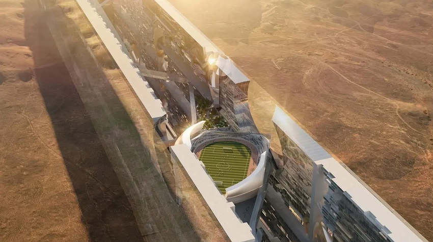

Project File / Confidential Work Sample
UD-01
Urban Infrastructure / Linear City
A city-scale linear infrastructure project shaped through computational design, circulation analysis, and large-team coordination. Over a three-year period, I helped shape the project through Grasshopper massing studies, floor plan development for pedestrian analysis across more than fifty levels, consultant and visualization coordination, coordination and assembly of the schematic design and design development packages, and preparation of major client presentations.